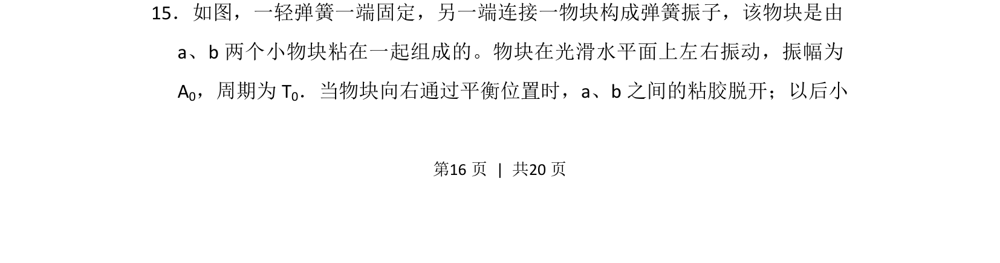
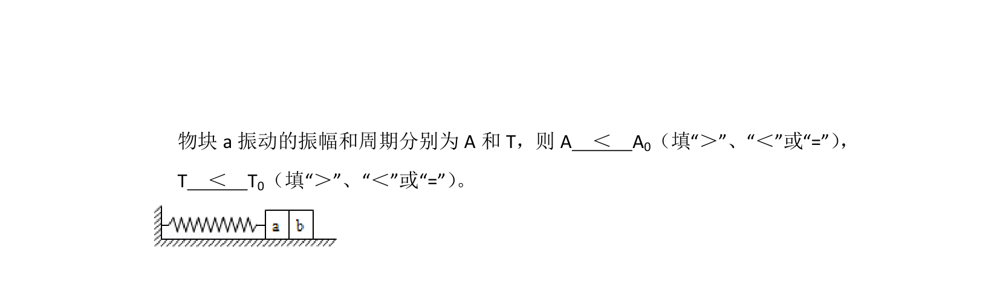
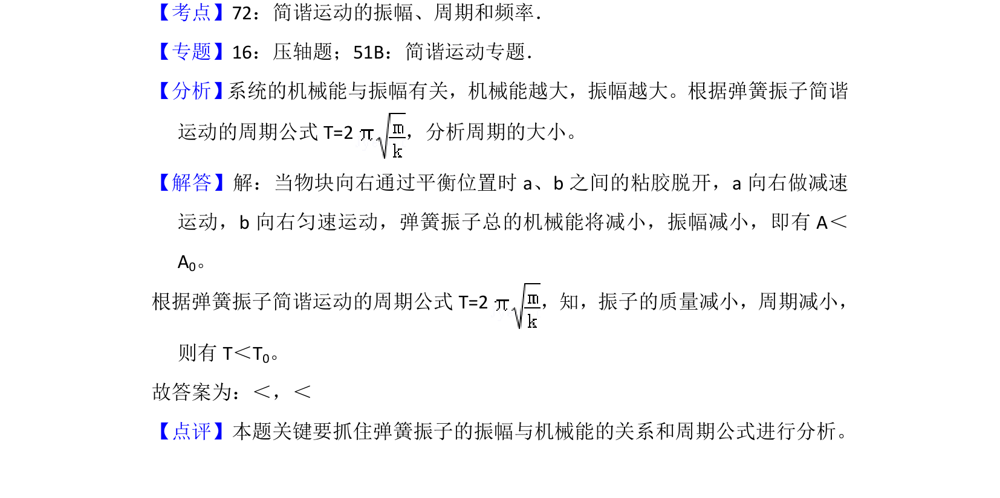

考点：简谐运动 周期 振幅


本题考查弹簧振子模型中物块分离前后的周期和振幅变化分析。

📄 原 PDF 第 16 页：
素材/真题/吉林/2008-2024·（吉林）物理高考真题/2013年高考物理试卷（新课标Ⅱ）（解析卷）.pdf
15．如图，一轻弹簧一端固定，另一端连接一物块构成弹簧振子，该物块是由 a、b两个小物块粘在一起组成的。物块在光滑水平面上左右振动，振幅为 A0，周期为T 0．当物块向右通过平衡位置时，a、b之间的粘胶脱开；以后小